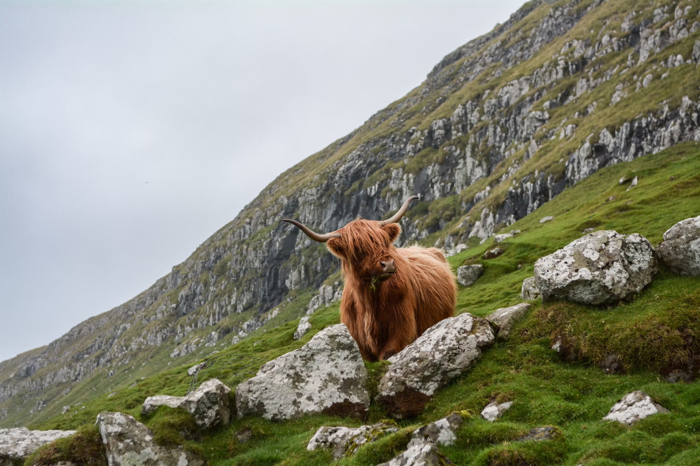

About Lochquarry Outdoor Centre:
Welcome to Lochquarry Outdoor Centre!
Lochquarry Outdoor Centre is located in the beautiful Argyll hills and offers a range of exciting outdoor activities for young people.
Our activities are suitable for all ages and experience levels. All activities are supervised by trained staff and safety equipment is provided.
Meet Our Staff:
Claire Jack - Centre Manager:

Claire is responsible for the overall running of the centre and all activities. Her favourite activity is Pole Climb.
Robbie Elliot - Senior Instructor (Land):

Robbie oversees all land-based activities. His favourite activity is hillwalking in the Scottish Highlands.
Marion Hunter - Centre Administrator:

Marion manages bookings and activity schedules. Her favourite activity is helping visitors enjoy their time at Lochquarry.
Our Visitors:
Our activities are popular with schools, Scouts, Guides and other youth groups.
Explore our recent trips through pictures, showcasing some of the most memorable places we visited:



Customer Reviews:
Thank you to all the staff who worked so hard, in awful weather, to make sure that all the pupils had an amazing experience’ - Mrs Kahn, Hillend Primary School.
Contact Us:
To book your next adventure, call us on 01475 229 8311.
To learn more about our centre and the activities, visit our other website.